中文
中文L. V. Hau et al.
Editor’s Note
Light moves more slowly in physical media than in empty space—but generally only by a little. Yet interference effects associated with quantum physics can in principle be used to slow the speed of light dramatically in a specially designed medium. Here, Lene Vestergaard Hau and colleagues demonstrate this effect in an ultracold gas of sodium atoms. They use a laser beam travelling at right angles to a test beam to prepare the atoms such that a fraction of them are in particular excited electronic states. Light in the test beam, being repeatedly absorbed and re-emitted by these atoms, travels at a speed of only 17 metres per second, some 20 million times slower than light in a vacuum. 中文
Techniques that use quantum interference effects are being actively investigated to manipulate the optical properties of quantum systems1. One such example is electromagnetically induced transparency, a quantum effect that permits the propagation of light pulses through an otherwise opaque medium2-5. Here we report an experimental demonstration of electromagnetically induced transparency in an ultracold gas of sodium atoms, in which the optical pulses propagate at twenty million times slower than the speed of light in a vacuum. The gas is cooled to nanokelvin temperatures by laser and evaporative cooling6-10. The quantum interference controlling the optical properties of the medium is set up by a “coupling” laser beam propagating at a right angle to the pulsed “probe” beam. At nanokelvin temperatures, the variation of refractive index with probe frequency can be made very steep. In conjunction with the high atomic density, this results in the exceptionally low light speeds observed. By cooling the cloud below the transition temperature for Bose–Einstein condensation11-13 (causing a macroscopic population of alkali atoms in the quantum ground state of the confining potential), we observe even lower pulse propagation velocities (17 m s－1) owing to the increased atom density. We report an inferred nonlinear refractive index of 0.18 cm2 W－1 and find that the system shows exceptionally large optical nonlinearities, which are of potential fundamental and technological interest for quantum optics. 中文
THE experiment is performed with a gas of sodium atoms cooled to nanokelvin temperatures. Our atom cooling set-up is described in some detail in ref. 14. Atoms emitted from a “candlestick” atomic beam source15 are decelerated in a Zeeman slower and loaded into a magneto-optical trap. In a few seconds we collect a cloud of 1010 atoms at a temperature of 1 mK and a density of 6×1011 cm－3. The atoms are then polarization gradient cooled for a few milliseconds to 50 μK and optically pumped into the F=1 ground state with an equal population of the three magnetic sublevels. We then turn all laser beams off and confine the atoms magnetically in the “4 Dee” trap14. Only atoms in the MF=－1 state, with magnetic dipole moments directed opposite to the magnetic field direction (picked as the quantization axis), are trapped in the asymmetric harmonic trapping potential.This magnetic filtering results in a sample of atoms that are all in a single atomic state (state
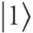
in Fig. 1b) which allows adiabatic optical preparation of the atoms, as described below, and minimal heating of the cloud. 中文
Next we evaporatively cool the atoms for 38 s to the transition temperature for Bose–Einstein condensation, Tc. The magnetic fields are then adjusted to adiabatically soften the trap. The resulting trapping potential has a frequency of fz= 21 Hz along the symmetry (z) axis of the 4 Dee trap, and transverse frequencies fx=fy=69 Hz. The bias field, parallel to the z axis, is 11 G. When we cool well below Tc, we are left with 1–2 million atoms in the condensate. For these parameters the transition occurs at a temperature of Tc= 435 nK and a peak density in the cloud of 5×1012 cm－3 . 中文
We now apply a linearly polarized laser beam, the coupling beam, tuned to the transition between the unpopulated hyperfine states
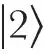
and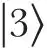
(Fig. 1b).This beam couples states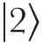
and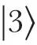
and creates a quantum interference for a weaker probe laser beam (left circularly polarized) which is tuned to the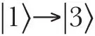
transition. A stable eigenstate (the “dark state”) of the atom in the presence of coupling and probe lasers is a coherent superposition of the two hyperfine ground states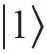
and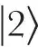
. The ratio of the probability amplitudes is such that the contributions to the atomic dipole moment induced by the two lasers exactly cancel. The quantum interference occurs in a narrow interval of probe frequencies, with a width determined by the coupling laser power. 中文
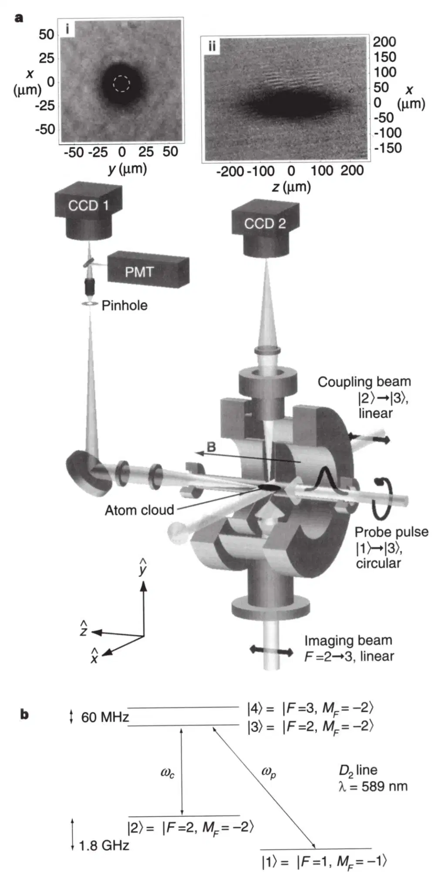
Fig. 1. Experimental set-up. A “coupling” laser beam propagates along the x axis with its linear polarization along the 11-G bias field in the z direction. The “probe” laser pulse propagates along the z axis and is left-circularly polarized. With a flipper mirror in front of the camera CCD 1, we direct this probe beam either to the camera or to the photomultiplier (PMT). For pulse delay measurements, we place a pinhole in an external image plane of the imaging optics and select a small area, 15 μm in diameter, of the probe beam centred on the atom clouds (as indicated by the dashed circle in inset (i)). The pulse delays are measured with the PMT. The imaging beam propagating along the y axis is used to image atom clouds onto camera CCD 2 to find the length of the clouds along the pulse propagation direction (z axis) for determination of light speeds. Inset (ii) shows atoms cooled to 450 nK which is 15 nK above Tc. (Note that this imaging beam is never applied at the same time as the probe pulse and coupling laser). The position of a cloud and its diameter in the two transverse directions, x and y, are found with CCD 1. Inset (i) shows an image of a condensate. 中文
Figure 2a shows the calculated transmission of the probe beam as a function of its detuning from resonance for parameters which are typical of this work. In the absence of dephasing of the
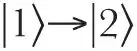
transition, the quantum interference would be perfect, and at line centre, the transmission would be unity. Figure 2b shows the refractive index for the probe beam as a function of detuning. Due to the very small Doppler broadening of the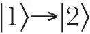
transition in our nanokelvin samples, application of very low coupling intensity leads to a transparency peak with a width much smaller than the natural line width of the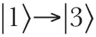
transition. Correspondingly, the dispersion curve is much steeper than can be obtained by any other technique, and this results in the unprecedented low group velocities reported here. The group velocity vg for a propagating electromagnetic pulse is16-19: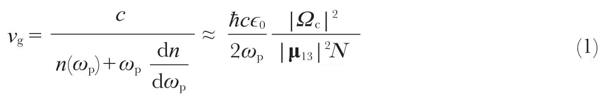
Here n(ωp) is the refractive index at probe frequency ωp (rad s－1), |Ωc|2 is the square of the Rabi frequency for the coupling laser and varies linearly with intensity, μ13 is the electric dipole matrix element between states
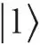
and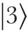
, N is the atomic density, and ϵ0 is the permittivity of free space. At line centre, the refractive index is unity, and the second term in the denominator of equation (1) dominates the first. An important characteristic of the refractive index profile is that on resonance the dispersion of the group velocity is zero (see ref. 16), that is, , and to lowest order, the pulse maintains its shape as it propagates. The established quantum interference allows pulse transmission through our atom clouds which would otherwise have transmission coefficients of e－110 (below Tc), and creates a steep dispersive profile and very low group velocity for light pulses propagating through the clouds. 中文
, and to lowest order, the pulse maintains its shape as it propagates. The established quantum interference allows pulse transmission through our atom clouds which would otherwise have transmission coefficients of e－110 (below Tc), and creates a steep dispersive profile and very low group velocity for light pulses propagating through the clouds. 中文
We note that the centres of the curves in Fig. 2 are shifted by 0.6 MHz from probe resonance. This is due to a coupling of state to state
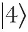
through the coupling laser field, which results in an a.c. Stark shift of level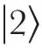
and a corresponding line shift of the 2→3 transition. As the transparency peak and unity refractive index are obtained at two-photon resonance, this leads to a refractive index at the 1→3 resonance frequency which is different from unity. The difference is proportional to the a.c. Stark shift and hence to the coupling laser intensity, which is important for predicting the nonlinear refractive index as described below. 中文
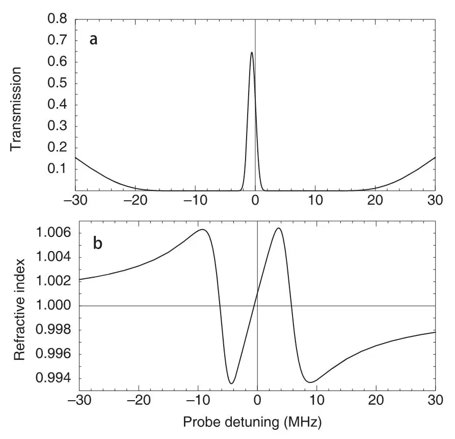
Fig. 2. Effect of probe detuning. a, Transmission profile. Calculated probe transmission as a function of detuning from the resonance for an atom cloud cooled to 450 nK, with a peak density of 3.3 ×1012 cm－3 and a length of 229 μm (corresponding to the cloud in inset (ii) of Fig. 1a). The coupling laser is resonant with the
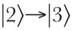
transition and has a power density of 52 mW cm－2. b, Refractive index profile. The calculated refractive index is shown as a function of probe detuning for the same parameters as in a. The steepness of the slope at resonance is inversely proportional to the group velocity of transmitted light pulses and is controlled by the coupling laser intensity. Note that as a result of the a.c. Stark shift of the transition, caused by a coupling of states
transition, caused by a coupling of states 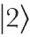
and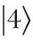
through the coupling laser field, the centre of the transmission and refractive index profiles is shifted by 0.6 MHz. The shift of the refractive index profile results in the nonlinear refractive index described in the text. 中文
A diagram of the experiment is shown in Fig. 1a. The 2.5-mm-diameter coupling beam propagates along the x axis with its linear polarization parallel to the B field. The 0.5-mm-diameter, σ－ polarized probe beam propagates along the z axis. The size and position of the atom cloud in the transverse directions, x and y, are obtained by imaging the transmission profile of the probe beam after the cloud onto a charge-coupled-device (CCD) camera. An image of a condensate is shown as inset (i). A 55 mW cm－2 coupling laser beam was present during the 10-μs exposure of the atoms to a 5 mW cm－2 probe beam tuned close to resonance. The f / 7 imaging optics are diffraction-limited to a resolution of 7 μm. 中文
During the pulse delay experiments, a pinhole (placed in an external image plane of the lens system) is used to select only the part of the probe light that has passed through the central 15 μm of the atom cloud where the column density is the greatest. The outline of the pinhole is indicated with the dashed circle in inset (i). 中文
Both coupling and probe beams are derived from the same dye laser. The frequency of the coupling beam is set by an acousto-optic modulator (AOM) to the
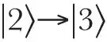
resonance. Here we take into account both Zeeman shifts and the a.c. Stark shift described above. 中文
The corresponding probe resonance is found by measuring the transmission of the probe beam as a function of its frequency. We apply a fast frequency sweep, across 32 MHz in 50 μs, and determine resonance from the transmission peak. The sweep is controlled by a separate AOM. The frequency is then fixed at resonance, and the temporal shape of the probe pulse is generated by controlling the r.f. drive power to the AOM. The resulting pulse is approximately gaussian with a full-width at half-maximum of 2.5 μs. The peak power is 1 mW cm－2 corresponding to a Rabi frequency of Ωp=0.20 A, where the Einstein A coefficient is 6.3 ×107 rad s－1. To avoid distortion of the pulse, it is made of sufficient duration that its Fourier components are contained within the transparency peak. 中文
Probe pulses are launched along the z axis 4 μs after the coupling beam is turned on (the coupling field is left on for 100 μs). Due to the magnetic filtering discussed above, all atoms are initially in state
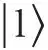
which is a dark state in the presence of the coupling laser only. When the pulse arrives, the atoms adiabatically evolve so that the probability amplitude of state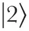
is equal to the ratio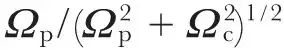
, where Ωp is the probe Rabi frequency. To establish the coherent superposition state, energy is transferred from the front of the probe pulse to the atoms and the coupling laser field. At the end of the pulse, the atoms adiabatically return to the original state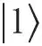
and the energy returns to the back of the probe pulse with no net energy and momentum transfer to the atomic cloud. Because the refractive index is unity, the electric field is unchanged as the probe pulse enters the medium. As the group velocity is decreased, the total energy density must increase so as to keep constant the power per area. This increase is represented by the energy stored in the atoms and the coupling laser field during pulse propagation through the cloud. 中文
The pulses are recorded with a photomultiplier (3-ns response time) after they penetrate the atom clouds. The output from the photomultiplier is amplified by a 150-MHz-bandwidth amplifier and the waveforms are recorded on a digital scope. With a “flipper” mirror in front of the camera we control whether the probe beam is directed to the camera or to the photomultiplier. 中文
The result of a pulse delay measurement is shown in Fig. 3. The front pulse is a reference pulse obtained with no atoms present. The pulse delayed by 7.05 μs was slowed down in an atom cloud with a length of 229 μm (see Fig. 1a, inset (ii)). The resulting light speed is 32.5 m s－1. We used a coupling laser intensity of 12 mW cm－2 corresponding to a Rabi frequency of Ωc=0.56 A. The cloud was cooled to 450 nK (which is 15 nK above Tc), the peak density was 3.3 ×1012 cm－3 , and the total number of atoms was 3.8×106 . From these numbers we calculate that the pulse transmission coefficient would be e－63 in the absence of the coupling laser. The probe pulse was indeed observed to be totally absorbed by the atoms when the coupling beam was left off. Inhomogeneous broadening due to spatially varying Zeeman shifts is negligible (~20 kHz) for the low temperatures and correspondingly small cloud sizes used here. 中文
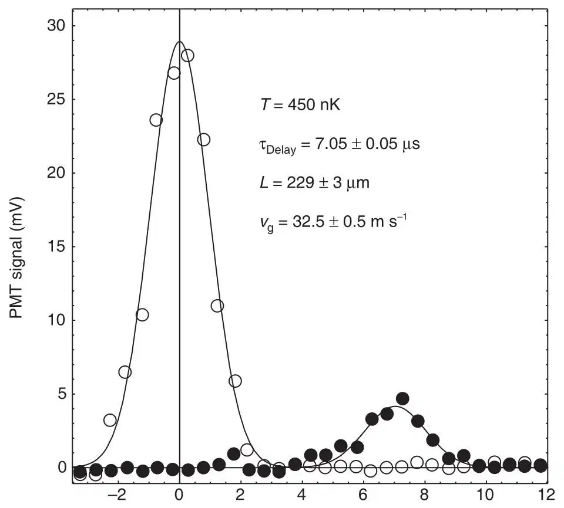
Fig. 3. Pulse delay measurement. The front pulse (open circles) is a reference pulse with no atoms in the system. The other pulse (filled circles) is delayed by 7.05 μs in a 229-μm-long atom cloud (see inset (ii) in Fig. 1a).The corresponding light speed is 32.5 m s－1. The curves represent gaussian fits to the measured pulses. 中文
The size of the atom cloud in the z direction is obtained with another CCD camera. For this purpose, we use a separate 1 mW cm－2 laser beam propagating along the vertical y axis and tuned 20 MHz below the F=2→3 transition. The atoms are pumped to the F=2 ground state for 10 μs before the imaging which is performed with an exposure time of 10 μs. We image the transmission profile of the laser beam after the atom cloud with diffraction-limited f / 5 optics. An example is shown in Fig. 1a, inset (ii), where the asymmetry of the trap is clear from the cloud’s elliptical profile. We note that the imaging laser is never applied at the same time as the coupling laser and probe pulse, and for each recorded pulse or CCD picture a new cloud is loaded. 中文
We measured a series of pulse delays and corresponding cloud sizes for atoms cooled to temperatures between 2.5 μK and 50 nK. From these pairs of numbers we obtain the corresponding propagation velocities (Fig. 4). The open circles are for a coupling power of 52 mW cm－2 (Ωc=1.2 A). The light speed is inversely proportional to the atom density (equation (1)) which increases with lower temperatures, with an additional density increase when a condensate is formed. The filled circles are for a coupling power of 12 mW cm－2. The lower coupling power is seen to cause a decrease of group velocities in agreement with equation (1). We obtain a light speed of 17 m s－1 for pulse propagation in an atom cloud initially prepared as an almost pure Bose–Einstein condensate (condensate fraction is ≥90%). Whether the cloud remains a condensate during and after pulse propagation is an issue that is beyond the scope of this Letter. 中文
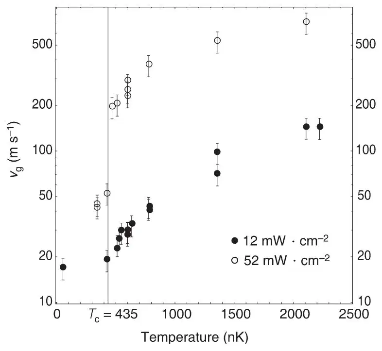
Fig. 4. Light speed versus atom cloud temperature. The speed decreases with temperature due to the atom density increase. The open circles are for a coupling power of 52 mW cm－2 and the filled circles are for a coupling power of 12 mW cm－2. The temperature Tc marks the transition temperature for Bose–Einstein condensation. The decrease in group velocity below Tc is due to a density increase of the atom cloud when the condensate is formed. From imaging measurements we obtain a maximum atom density of 8×1013 cm－3 at a temperature of 200 nK. Here, the dense condensate component constitutes 60% of all atoms, and the total atom density is 16 times larger than the density of a non-condensed cloud at Tc. The light speed measurement at 50 nK is for a cloud with a condensate fraction ≥90%. The finite dephasing rate due to state
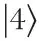
does not allow pulse penetration of the most dense clouds. This problem could be overcome by tuning the laser to the Dl line as described in the text. 中文
Transitions from state
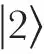
to state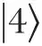
, induced by the coupling laser (detuned by 60 MHz from this transition), result in a finite decay rate of the established coherence between states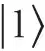
and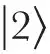
and limit pulse transmission. The dephasing rate is proportional to the power density of the coupling laser and we expect, and find, that probe pulses have a peak transmission that is independent of coupling intensity and a velocity which reduces linearly with this intensity. The dephasing time is determined from the slope of a semi-log plot of transmission versus pulse delay19. At a coupling power of 12 mW cm－2, we measured a dephasing time of 9 μs for atom clouds just above Tc. 中文
Giant Kerr nonlinearities are of interest for areas of quantum optics such as optical squeezing, quantum nondemolition, and studies of nonlocality. It was recently proposed that they may be obtained using electromagnetically induced transparency20. Here we report the first (to our knowledge) measurement of such a nonlinearity. The refractive index for zero probe detuning is given by n=1 +(n2Ic) where Ic is the coupling laser intensity, and n2 the cross phase nonlinear refractive index. As seen from Fig. 2b, the nonlinear term (n2 Ic) equals the product of the slope of the refractive index at probe resonance and the a.c. Stark shift of the
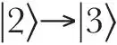
transition caused by the coupling laser. We can then express n2 by the formula (see equation (1));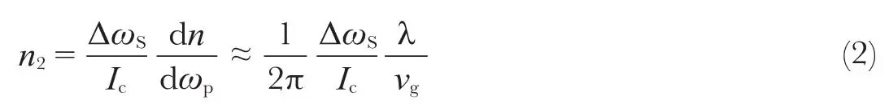
where ΔωS is the a.c. Stark shift, proportional to Ic, and λ the wavelength of the probe transition. We measured an a.c. Stark shift of 1.3×106 rad s－1 for a coupling laser intensity of 40 mW cm－2. For a measured group velocity of 17 m s－1 (Fig. 4), we obtain a nonlinear refractive index of 0.18 cm2 W－1. This nonlinear index is ~106 times greater than that measured in cold Cs atoms21. 中文
With a system that avoids the
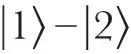
dephasing rate described above (which can be obtained by tuning to the Dl line in sodium), the method used here could be developed to yield the collision-induced dephasing rate of the double condensate which is generated in the process of establishing electromagnetically induced transparency (see also refs 22, 23). In that case, the square of the probability amplitude for state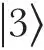
could be kept below 10－5 during pulse propagation, with no heating of the condensate as a result. With improved frequency stability of our set-up and lower coupling intensities, even lower light speeds would be possible, perhaps of the order of centimetres per second, comparable to the speed of sound in a Bose–Einstein condensate. Under these conditions we expect phonon excitation during light pulse propagation through the condensate. By deliberately tuning another laser beam to the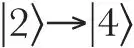
transition, it should be possible to demonstrate optical switching at the single photon level24. Finally, we note that during propagation of the atom clouds, light pulses are compressed in the z direction by a ratio of c/vg. For our experimental parameters, that results in pulses with a spatial extent of only 43 μm. 中文
(397, 594-598; 1999)
Lene Vestergaard Hau*†, S. E. Harris‡, Zachary Dutton*† & Cyrus H. Behroozi*§
* Rowland Institute for Science, 100 Edwin H. Land Boulevard, Cambridge, Massachusetts 02142, USA
† Department of Physics, § Division of Engineering and Applied Sciences, Harvard University, Cambridge, Massachusetts 02138, USA
‡ Edward L. Ginzton Laboratory, Stanford University, Stanford, California 94305, USA
Received 3 November; accepted 21 December 1998.
References:
1. Knight, P. L., Stoicheff, B. & Walls, D. (eds) Highlights in quantum optics. Phil. Trans. R. Soc. Lond. A 355, 2215-2416 (1997).
2. Harris, S. E. Electromagnetically induced transparency. Phys. Today 50(7), 36-42 (1997).
3. Scully, M. O. & Zubairy, M. S. Quantum Optics (Cambridge Univ. Press, 1997).
4. Arimondo, E. in Progress in Optics (ed. Wolf, E.) 257-354 (Elsevier Science, Amsterdam, 1996).
5. Bergmann, K., Theuer, H. & Shore, B. W. Coherent population transfer among quantum states of atoms and molecules. Rev. Mod. Phys. 70, 1003-1006 (1998).
6. Chu, S. The manipulation of neutral particles. Rev. Mod. Phys. 70, 685-706 (1998).
7. Cohen-Tannoudjii, C. N. Manipulating atoms with photons. Rev. Mod. Phys. 70, 707-719 (1998).
8. Phillips, W. D. Laser cooling and trapping of neutral atoms. Rev. Mod. Phys. 70, 721-741 (1998).
9. Hess, H. F. Evaporative cooling of magnetically trapped and compressed spin-polarized hydrogen. Phys. Rev. B 34, 3476-3479 (1986).
10. Masuhara, N. et al. Evaporative cooling of spin-polarized atomic hydrogen. Phys. Rev. Lett. 61, 935-938 (1988).
11. Anderson, M. H., Ensher, J. R., Matthews, M. R., Wieman, C. E. & Cornell, E. A. Observation of Bose-Einstein condensation in a dilute atomic vapor. Science 269, 198-201 (1995).
12. Davis, K. B. et al. Bose-Einstein condensation in a gas of sodium atoms. Phys. Rev. Lett. 75, 3969-3973 (1995).
13. Bradley, C. C., Sackett, C. A. & Hulet, R. G. Bose-Einstein condensation of lithium: observation of limited condensate number. Phys. Rev. Lett. 78, 985-989 (1997).
14. Hau, L. V. et al. Near-resonant spatial images of confined Bose-Einstein condensates in a 4-Dee magnetic bottle. Phys. Rev. A 58, R54-R57 (1998).
15. Hau, L. V., Golovchenko, J. A. & Burns, M. M. A new atomic beam source: The “candlestick”. Rev. Sci. Instrum. 65, 3746-3750 (1994).
16. Harris, S. E., Field, J. E. & Kasapi, A. Dispersive properties of electromagnetically induced transparency. Phys. Rev. A 46, R29-R32 (1992).
17. Grobe, R., Hioe, F. T. & Eberly, J. H. Formation of shape-preserving pulses in a nonlinear adiabatically integrable system. Phys. Rev. Lett. 73, 3183-3186 (1994).
18. Xiao, M., Li, Y.-Q., Jin, S.-Z. & Gea-Banacloche, J. Measurement of dispersive properties of electromagnetically induced transparency in rubidium atoms. Phys. Rev. Lett. 74, 666-669 (1995).
19. Kasapi, A., Jain, M., Yin, G. Y. & Harris, S. E. Electromagnetically induced transparency: propagation dynamics. Phys. Rev. Lett. 74, 2447-2450 (1995).
20. Schmidt, H. & Imamoglu, A. Giant Kerr nonlinearities obtained by electromagnetically induced transparency. Opt. Lett. 21, 1936-1938 (1996).
21. Lambrecht, A., Courty, J. M., Reynaud, S. & Giacobino, E. Cold atoms: A new medium for quantum optics. Appl. Phys. B 60, 129-134 (1995).
22. Hall, D. S., Matthews, M. R., Wieman, C. E. & Cornell, E. A. Measurements of relative phase in two-component Bose-Einstein condensates. Phys. Rev. Lett. 81, 1543-1546 (1998).
23. Ruostekoski, J. & Walls, D. F. Coherent population trapping of Bose-Einstein condensates: detection of phase diffusion. Eur. Phys. J. D (submitted).
24. Harris, S. E. & Yamamoto, Y. Photon switching by quantum interference. Phys. Rev. Lett. 81, 3611-3614 (1998).
Acknowledgements. We thank J. A. Golovchenko for discussions and C. Liu for experimental assistance. L.V.H. acknowledges support from the Rowland Institute for Science. S.E.H. is supported by the US Air Force Office of Scientific Research, the US Army Research Office, and the US Office of Naval Research. C.H.B. is supported by an NSF fellowship.
Correspondence and requests for materials should be addressed to L.V.H. (e-mail: hau@rowland.org).